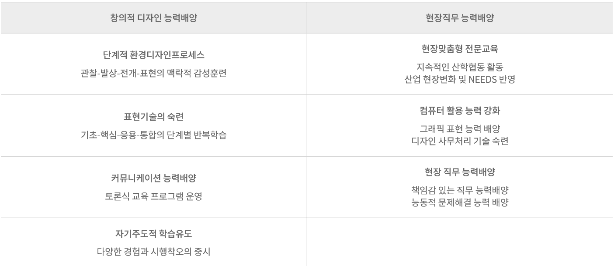

조형관 후면 5층
조형관 후면 5층 TEL 02-950-7860 / FAX 02-950-7869
TEL 02-950-7860 / FAX 02-950-7869
도시환경디자인이란?
도시환경디자인은 공원, 광장, 수변공간, 역 등 도시의 공공 공간을 대상으로 인간ㆍ도시ㆍ자연을 유기적으로 연결하여 삶의 질을 높이기 위한
쾌적한 환경을 창조하는 디자인 분야이다.
교육목표
창의적인 발상과 표현기술의 화합을 근간으로, 환경디자인에 요구되는 토털디자인의 전문분야를 통합적인 시각에서 교수하고 컴퓨터를 활용한 다양한
표현기법을 강화하며 조직 내에서 바람직한 인간 관계 유지에 필요한 인성을 갖춘 인력양성을 교육 목표로 한다.
교육방침

개설 년도
2009 년
졸업생 수
6회, 408명
재학생 수
1학년 113 명, 2학년 113 명
자격증
컴퓨터그래픽스 운용기능사, 컬러리스트 산업기사 ‧ 기사, 전산응용건축 제도 기능사, 옥외 광고사, 실내건축 산업기사,
광고도장기능사, 조경기능사
취업 분야
도시환경디자인 전문회사, 환경시설물 디자인 전문회사, 조명디자인 전문회사, 디스플레이 전문회사, 옥외광고디자인 전문회사,
컴퓨터그래픽 관련 디자인회사, 경관디자인 전문회사, 환경색채 디자인회사, 도시브랜드디자인 전문회사, 환경디자인 시공회사, 환경조형물디자인 전문회사, 조경디자인
전문회사
| 학기 | 과목명 | 교과목 개요 |
|---|---|---|
| 1 | 도시환경디자인개론 | 도시환경의 기초적인 개념을 다각적인 시점에서 개관하고, 도시환경디자인의 범위와 방법에 대하여 이해하며 도시환경의 주요 분야별 디자인 트렌드에 대하여 사례를 중심으로 살펴본다. 이를 토대로 도시환경디자이너로서의 자세와 소양을 배양한다. |
| 환경그래픽 | 도시의 입면과 평면에 시각적으로 정보와 감성을 전달하는 그래픽 매체를 심미적으로 표현하는 기술을 익힌다. 사용되는 재료와 매체의 크기 등이 도시 공간과 연계되었을 때 작용하는 스케일감과 공간감에 맞게 시뮬레이션하는 방법을 익힌다. | |
| 스케치기법 | 디자인 실무 프로세스를 위한 아이디어와 프레젠테이션을 표현하기 위한 기초적인 테크닉과 표현 기술을 습득하는 과정으로 체험과 실습을 통해 개인적인 표현능력을 함양하여 디자인의 기초가 되는 스케치 능력을 기르는데 교과목의 목표가 있다. | |
| 기초제도실습 | 설계자의 요구사항을 제작자 또는 시공자에게 전달하기 위하여 선, 문자, 기호 등을 사용하여 제품의 모양, 구조, 크기, 재료, 가공법 등을 제도규칙에 맞추어 정확하고 간단명료하게 도면으로 작성하는 능력이다. | |
| 도시공간디자인1 | 도시의 외부환경과 내부환경의 기능과 의미를 이해하고 환경과 인간행동의 관계에 초점을 맞추어 도시의 다양한 공간을 경험함으로써 실질적인 공간감을 습득한다. | |
| CAD기초실습 | 공간을 중심으로 형태, 스케일, 재료, 구조 등을 파악하고 CAD 프로그램을 이용해 도면화할 수 있는 능력을 키우며 도면화된 공간을 자유롭게 해석할 수 있도록 하여 도면에 대한 실무 적응력을 키우는데 목표가 있다. | |
| 모델링기초 | 공간을 중심으로 형태, 스케일, 재료, 구조 등을 파악하고 스케치업 프로그램을 이용해 3D입체 도면을 작성할 수 있는 능력을 키우며 도면화 된 공간을 자유롭게 해석할 수 있도록 하여 도면에 대한 실무 적응력을 키우는데 목표가 있다. | |
| 기초색체디자인 | 도시공간계획에 있어서 설정된 컨셉에 따른 환경색채와 재료의 질감을 파악하고 디자인요소로써 적용하여 컴퓨터 프로그램을 활용하여 표현할 수 있다. | |
| 2 | 도시와문화 | 시장, 공원, 극장, 카페, 묘역, 학교, 관청, 조형물 등 도시환경을 구성하는 다양한 공간의 정체성과 인문적 특성을 학습한다. 또한 현장학습을 통해 현대 도시가 안고 있는 공공 공간의 문제점을 찾아낸 뒤 바람직한 대안을 모색한다. |
| 도시환경사인1 | 내.외부 공간에 정보와 감성을 전달하는 사인시스템과 옥외광고물에 대한 이론적 체계를 익히고, 실습을 통해서 그래픽요소, 컨텐츠, 재료, 도시공간의 필요한 위치에 적용하는 훈련을 한다. | |
| CAD응용실습 | CAD 프로그램을 활용해 각종 실시설계도면을 작성할 수 있고 다양한 사례의 공간 위주 도면에서 형태, 스케일, 재료, 구조 등을 파악해 표기된 내용을 해독할 수 있도록 하며 원하는 부분을 수정할 수 있는 실무능력을 배양함으로써 도면관련 업무를 원활히 수행할 수 있도록 한다. | |
| 도시공간디자인2 | 도시의 주거공간 및 주변 환경의 기능과 의미를 이해하여 공간디자인에서 기본이 되는 이용자 요구를 읽고 문제 해결의 방법을 습득한다. 실제 프로젝트를 통해 이용자 경험 디자인에 기반을 둔 공간디자인 프로세스를 단계적으로 습득한다. | |
| 공간드로잉 | 도시의 다양한 모습과 사물 등을 직접 손으로 그리는 방법을 통해서 공간감을 익히고 사물을 정확하게 표현하는 테크닉을 익혀 전문 디자이너로서의 자신의 생각을 자유롭게 표현하는 기초능력을 배양할 수 있다. | |
| 3D 모델링1 | 공간을 중심으로 형태, 스케일, 재료, 구조 등을 파악하고 3D MAX 프로그램을 이용해 3D 입체적 도면을 작성할 수 있는 능력을 키우며 도면화된 공간을 자유롭게 해석할 수 있도록 하여 도면에 대한 실무 적응력을 키우는데 목표가 있다. | |
| 제도실습 | 디자인 결과물을 명확히 제시하고 실체화하는데 필요한 도면 작성방법과 제도 기법을 교수하여 트레이닝 시킨다. | |
| 환경색체디자인 | 도시의 색채에 관한 제반문제를 실험·조사·분석하여 이를 토대로 보편타당성 있는 도시환경 색채를 도출해내는 방법과 결론에 도달하는 일련의 과정을 습득토록 하여 논리적인 색채사고 능력을 향상 시킨다. | |
| 재료 및 구조 | 도시환경디자인 분야에서 다루어지는 다양한 재료들의 물성과 가공기법 및 구조를 이해하고 숙지하여 실제 디자인에 구체적으로 적용할 수 있도록 한다. 또한, 공정별 도면을 통한 재료의 물량을 산출해 봄으로써 도면을 구체적으로 해독하는 능력과 시공까지 연계할 수 있는 현장적응력을 키운다. | |
| 현장실습1 | 수업시간에 배운 내용을 가지고 전공 관련 업종의 산업체에 직접 나가 적용하고 체험해 봄으로써 전공분야를 현실적으로 이해하고 향후 취업분야를 선택하기 위한 자료로 활용한다. |
| 학기 | 과목명 | 교과목 개요 |
|---|---|---|
| 1 | 도시환경디자인 | 인간의 감성적 특성과 요구를 충족시킬 수 있는 쾌적한 도시를 구현하는 데 필요한 인간중심의 제반 디자인 요소를 추출하여 새로운 콘셉트를 도시환경을 제안하고 디자인하는 과정으로서, 디자인 프로세스를 체계적으로 교수하여 조형적 발상과 시스템적인 사고력을 배양하도록 한다. |
| 도시환경사인2 | 도시의 길잡이라고 할 수 있는 사인시스템과 옥외광고물들을 환경색채를 바탕으로 인간공학적으로 디자인하는 방법을 훈련하여 도시브랜드디자인이나 도시의 다양한 안내시스템을 디자인하는 방법을 익힌다. | |
| 모델링2 | 3D 모델링1의 기초지식 및 실습내용을 반복하여 훈련하고 실제 프로젝트의 공간 을 3D MAX 프로그램을 이용해 3D입체적 도면으로 표현할 수 있는 능력을 배양한다. 특히, 3D 공간의 모델링 형태, 스케일, 재료표현, 구조표현 등의 다양한 기법을 익히고 공간 특성에 따른 조명효과와 뷰설정의 표현기법을 숙련한다. | |
| 공간설계 실습1 | 「공공성이 있는 공간」을 대상으로 하여 프로젝트 관리에서부터 프로젝트 분석, 계획설계에 이르는 일련의 과정에 대하여 팀으로 구성된 프로젝트 가상체험을 통해 디자인 프로세스를 습득하고 프로세스의 각 단계에서 요구되는 공간설계 지식과 표현 기술을 습득한다. | |
| 시공실무 | 공정별 시공단계에서 현장과 연계해서 도면을 해석할 수 있도록 하며 도면과 시방서를 통해 재료의 물량산출을 해봄으로써 공정에 따라 시공과 체계적으로 연계할 수 있는 현장 실무 능력을 키운다. | |
| 전시 및 디스플레이 | 상품의 전시·진열·판매 공간을 최상의 환경으로 조성하기 위해 공간, 가구, 조형물 등을 디자인하는 프로세스와 효과적인 공간 연출을 위한 코디네이션 기법 등을 교수하여 전시 및 디스플레이 디자이너로서의 디자인 실무 능력을 향상시킨다. | |
| 조경디자인 | 조경개론을 통해 습득한 이론적 지식을 바탕으로 도시를 자연과 인공 환경, 인간이 어우러지는 그린디자인으로 기획하는 방법을 실습한다. | |
| 디자인창업 | 자본주의의 건전한 발전을 이끄는 기업가 정신을 학습하는 동시에 디자인 전공자들의 벤처 비즈니스를 돕는 실무능력을 익힌다. 또한 저작권과 상표, 특허 등 창업에 필요한 법규와 각종 디자인 분쟁 사례 연구를 통해 문제해결능력을 배양한다. | |
| 현장실습2 | 수업시간에 배운 내용을 가지고 전공 관련 업종의 산업체에 직접 나가 적용하고 체험해 봄으로써 전공분야를 현실적으로 이해하고 향후 취업분야를 선택하기 위한 자료로 활용한다. | |
| 2 | 도시환경디자인 종합설계 | 공용공간의 내부부터 상업공간의 파사드를 포함한 도시의 거리까지 다양하고 복잡한 환경적 조건의 도시공간을 대상으로 실무 프로젝트화하여 재료와 시공방법 등 제작 과정과 관리에 집중하여 디자인을 완성한다. 이 과정에서 실무현장의 트렌드, 제작 공법, 신기술, 자문 등 실제적인 자료를 기반으로 공간을 연출한다. |
| 포트폴리오 | 도시환경디자인 핵심직무의 전공 프로젝트 작품 결과물을 중심으로 2D, 3D 컴퓨터 프로그램을 활용하여 포트폴리오를 제작할 수 있다. | |
| 3D멀티미디어 | 디자인의 결과물을 컴퓨터를 이용하여 소리와 움직임이 있는 역동적이고 차별화된 표현 능력을 훈련하여 도시환경 디자이너로서 자신의 디자인 결과물을 2D, 3D, 동영상 등 다양하게 표현할 수 있는 방법을 익힌다. | |
| 공간설계실습2 | 공간설계실습1의 심화과정으로써, 「공공성이 있는 공간」을 대상으로 하여 프로젝트 관리에서부터 프로젝트 분석, 계획 및 기본설계, 프로젝트 마감단계에 이르는 일련의 과정에 대하여 현장 실무에서 진행되는 실제 디자인 직무체험을 통해 디자인 프로세스의 이해를 심화 학습하고 프로세스의 각 단계에서 요구되는 공간설계 지식과 표현 기술을 숙련한다. 또, 프로젝트 착수에서 마감까지의 단계를 고려하여 시간관리, 데이터관리 등의 디자인 사무 자료를 효율적으로 정리할 수 있다. | |
| 공간연출디자인 | 다양한 공간을 최상의 환경으로 조성하기 위해 공간, 가구, 조형물 등을 디자인하는 프로세스와 효과적인 공간 연출을 위한 코디네이션 기법 등을 교수하여 디자인 실무 능력을 향상시킨다. | |
| 그린코디네이션 | 도시공간계획에 있어서 설정된 컨셉과 대상지 조건에 맞는 식재 개념을 설정하고 공간계획에 적용하여 코디할 수 있는 능력을 배양한다. 식재를 공간 디자인 요소로써 적용하여 컴퓨터 프로그램을 활용하여 표현할 수 있다. |
| 직위 | 성명 | 학위 / 전공 | 연구실 위치 / 전화번호 |
| 교수 | 한정규 | 미술학석사/환경시설물디자인 | 은봉관 8층/02-950-7861 |
| 조교수 | 이한나 | 미술학박사/환경디자인 | 은봉관 8층/02-950-7862 |
| 조교수 | 이정미 | 디자인학 박사/공공문화공간디자인 | 제1 공학관 2층/02-950-7863 |
| 조교수 | 김영훈 | 디자인학 박사/환경디자인 | 제2 공학관 3층/02-950-7864 |
| 조교수 | 손수호 | 언론학박사/문화이론 | 조형관 4층/02-950-7051 |
| 행정조교 | 한혜숙 | 조형관 5층/02-950-7860 | |
| 실습조교 | 김형민 | 조형관 3층/02-950-7868 |